La ruta, de un vistazo
Catorce días de norte a centro y vuelta al norte, con un solo vuelo interno (Hanói → Da Nang) y todo lo demás por carretera, tren o barco. La lógica del viaje: llegar y aclimatarse en Hanói, bajar al centro para la parte bonita y tranquila (Hoi An, Hue, Phong Nha), volver por los arrozales de Ninh Binh y rematar con dos días de bahía y despedida en Hanói.
- Vuelo Madrid → Hanói · sáb 29 ago, 09:05 → dom 30 ago, 07:15 (~13–14 h)
- Hanói
dom 30 → lun 31 ago · 1 noche — lago Hoan Kiem, Old Quarter y primer choque con el tráfico - Vuelo Hanói → Da Nang · lun 31 ago, 19:10 → 20:35 (~1 h 25) + coche a Hoi An
- Hoi An
lun 31 ago → jue 3 sep · 3 noches — casco antiguo, farolillos, sastres y playa - Coche privado por el Paso de Hai Van (con Marble Mountains y Lang Co)
- Hue
jue 3 → vie 4 sep · 1 noche — Ciudad Imperial, tumbas de los emperadores y río Perfume - Coche o tren Hue → Phong Nha (~4 h / ~3 h a Dong Hoi)
- Phong Nha
vie 4 → dom 6 sep · 2 noches — las cuevas más espectaculares del planeta, en un valle rural - Traslado a Ninh Binh: tren nocturno/diurno o vuelo Dong Hoi → Hanói + coche
- Tam Coc / Ninh Binh
dom 6 → mar 8 sep · 2 noches — la "bahía de Ha Long terrestre": barcas, arrozales y miradores - Coche Ninh Binh → Hanói (~1 h 45)
- Hanói
mar 8 → mié 9 sep · 1 noche — noche puente antes del crucero - Crucero Lan Ha Bay
mié 9 → jue 10 sep · 1 noche a bordo — kayak, cuevas y karst sin las multitudes de Ha Long - Hanói
jue 10 → sáb 12 sep · 2 noches — compras, cafés, French Quarter y despedida - Vuelo Hanói → Madrid · sáb 12 sep, 08:45 → 20:45 (~13–14 h)
El mapa del viaje
El mapa de Google con todas las rutas día a día —hoteles, monumentos y traslados—, listo para abrir desde el móvil sobre el terreno. Debajo, el esquema del país: se baja al centro en avión y se vuelve subiendo por tierra.
🗺️ Abrir el mapa completo en Google My MapsSi el mapa aparece en blanco, es que aún no está compartido en modo público: en My Maps → Compartir → "Cualquier persona con el enlace". Mientras tanto, el botón de arriba lo abre igual.
Cómo se mueve uno
① 31 ago — vuelo a las 19:10: nada de excursiones fuera de Hanói.
② 6 sep — traslado Phong Nha → Tam Coc: día logístico, sin planes turísticos.
Hanói — el aterrizaje
Domingo 30 → lunes 31 de agostoLlegáis a las 07:15 tras trece horas de vuelo, así que estos dos días son intensos pero con freno de mano. Hanói es ruidosa, densa y absolutamente adictiva: mil motos por minuto, abuelas cocinando en la acera y, a dos calles, un lago con un templo en una isla. Base en Hoan Kiem, que es como dormir en el centro del centro.
Día 1 · Llegada y Old Quarter domingo 30 ago
Mañana Llegada 07:15, traslado y dejar el equipaje (aunque no haya habitación, el hotel la guarda). Primer café vietnamita en Hoan Kiem para reiniciar el cuerpo. Vuelta al lago Hoan Kiem, templo Ngoc Son por el puente rojo y calles del Old Quarter.
Tarde Descanso corto o masaje de piernas —la mejor inversión del viaje—. Templo de la Literatura si el jet lag lo permite. Café con terraza y contemplación del caos.
Noche Cena temprana y paseo por el lago. A dormir pronto: el día 31 es largo.
Día 2 · Hanói cultural y vuelo nocturno lunes 31 ago
Mañana Mausoleo de Ho Chi Minh, la Pagoda del Pilar Único y el conjunto presidencial. Si ayer no dio tiempo, aquí encaja el Templo de la Literatura. Moverse en Grab para no perder tiempo.
Tarde Comida tranquila y Museo de Etnología —el mejor museo del país y muy cómodo—. Recoger equipaje y salir al aeropuerto con margen.
Noche Vuelo HAN 19:10 → DAD 20:35, coche a Hoi An (~45 min) y check-in. Cena ligera si quedan fuerzas.
Lo básico que ver en Hanói
- Lago Hoan Kiem y templo Ngoc Son — el corazón de la ciudad; al amanecer se llena de gente haciendo taichí.
- Old Quarter (36 calles) — cada calle tuvo su gremio: Hang Bac (plata), Hang Ma (papel), Hang Gai (seda).
- Templo de la Literatura — la primera universidad de Vietnam (1070), jardines y estelas sobre tortugas.
- Mausoleo de Ho Chi Minh y Pagoda del Pilar Único — solo por la mañana, código de vestimenta estricto.
- Museo de Etnología — las 54 etnias del país, con casas tradicionales a tamaño real en el jardín.
- Catedral de San José — neogótica y algo destartalada; alrededor, los mejores cafés jóvenes.
- Train Street — solo como paseo: la policía la cierra a menudo y los cafés abren y cierran según el mes.
- Teatro de marionetas de agua Thang Long — kitsch y encantador, 45 minutos junto al lago.
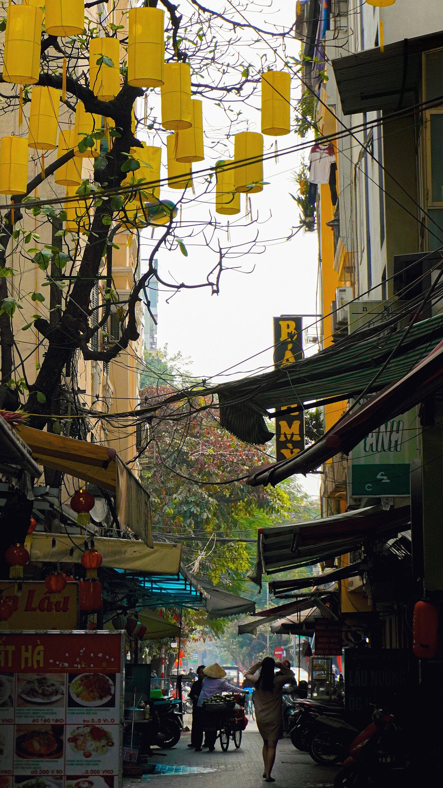
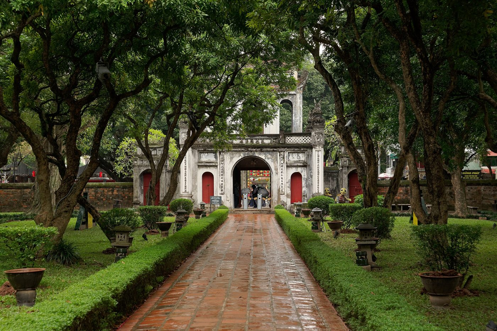
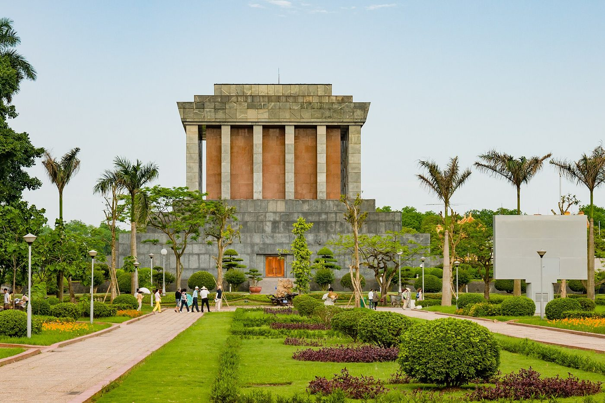
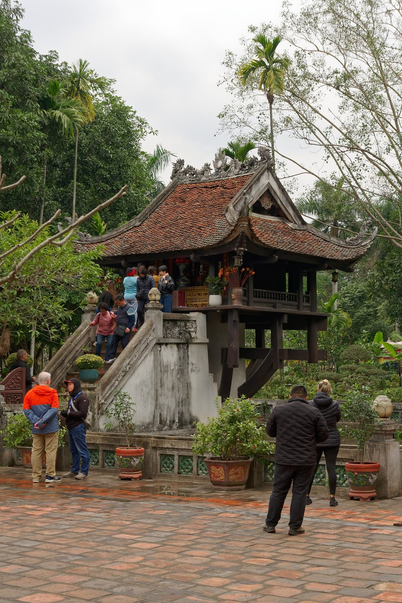
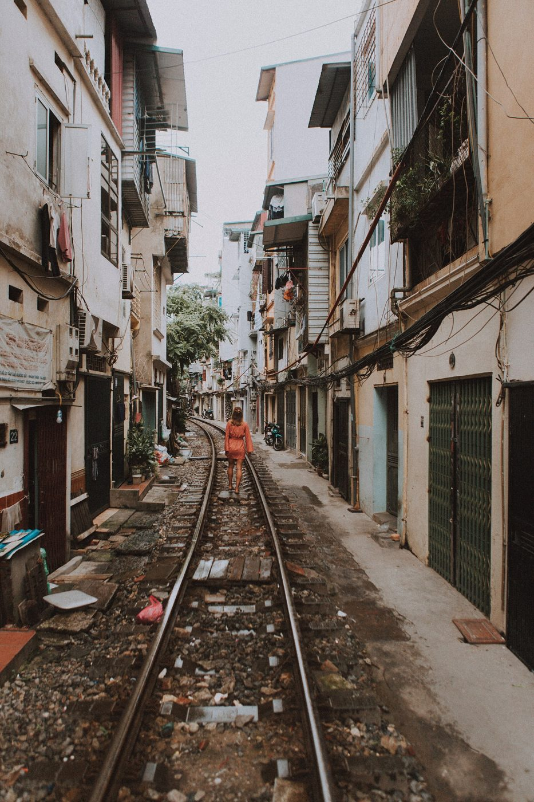
Qué y dónde comer en Hanói
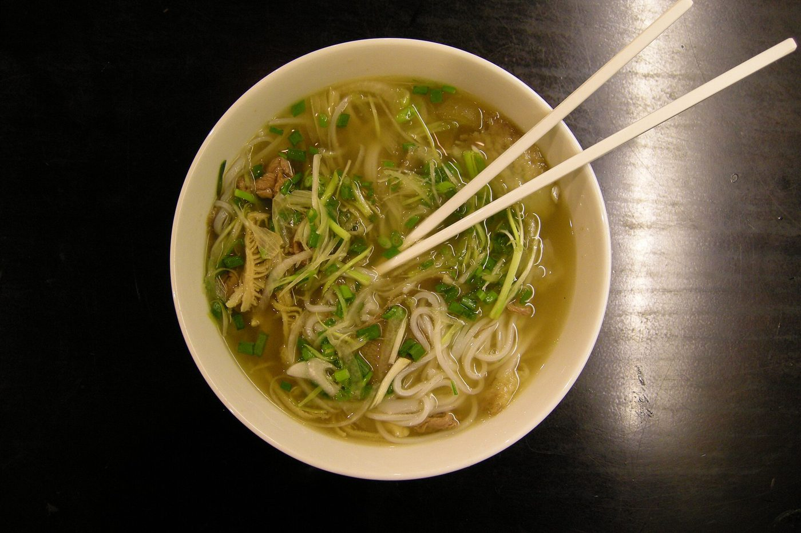
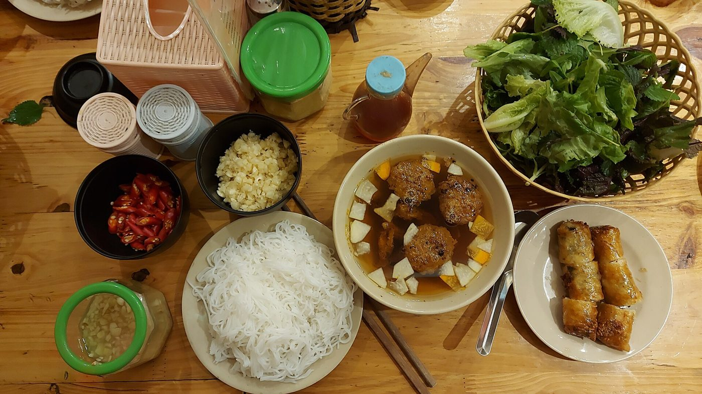
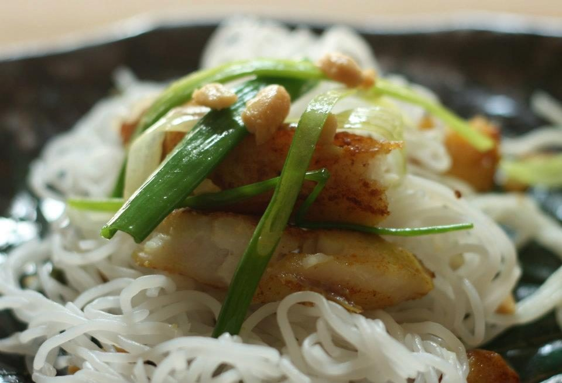
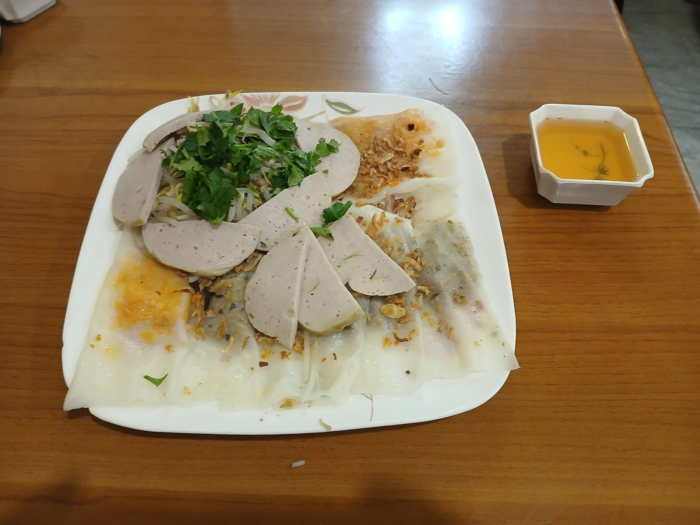
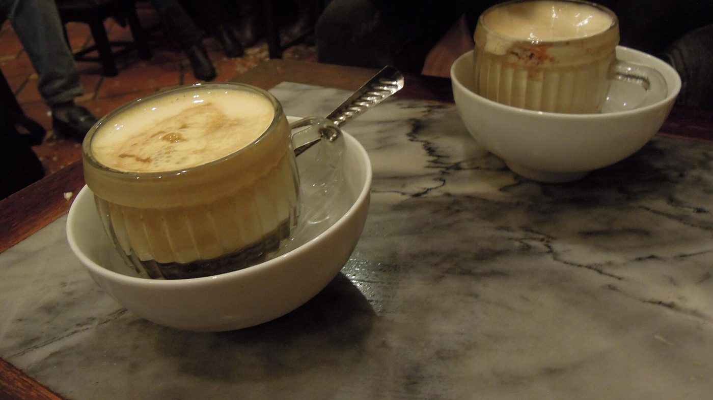
- Phở Gia Truyền — 49 Bát Đàn · el pho más famoso de Hanói; hay cola, se paga antes y se come rápido. Solo mañanas. 📍 Maps
- Phở Thìn Lò Đúc — 13 Lò Đúc · versión con la carne salteada al wok, más grasienta e intensa. Un clásico. 📍 Maps
- Bún chả Hương Liên — 24 Lê Văn Hưu · el "bun cha de Obama": turístico pero bueno. Alternativa más local: Bún chả Đắc Kim (1 Hàng Mành). 📍 Maps
- Chả Cá Thăng Long — 21 Đường Thành · te ponen la sartén en la mesa con el pescado, el eneldo y los fideos. Un plato único que hay que probar. 📍 Maps
- Bánh cuốn Bà Hoành — 66 Tô Hiến Thành · crepes de arroz rellenas hechas al vapor delante de ti. Desayuno perfecto. 📍 Maps
- Bánh mì 25 — 25 Hàng Cá · el mejor bocadillo del Old Quarter, con terraza enfrente para sentarse. 📍 Maps
- Cà phê Giảng — 39 Nguyễn Hữu Huân · aquí se inventó el café de huevo en 1946. Pedirlo caliente, al fondo del callejón. 📍 Maps
- Bia hơi Tạ Hiện — esquina Tạ Hiện · Lương Ngọc Quyến · taburetes de plástico, cerveza fresquísima recién tirada y toda la ciudad joven en la calle. 📍 Maps
Regla de oro en Hanói: desayunar en la calle. El pho y el banh cuon son platos de mañana —a las 11 muchos sitios ya han cerrado—. Y donde haya taburetes bajos llenos de vietnamitas, se come bien.
Hoi An — farolillos y buena vida
Lunes 31 ago → jueves 3 de septiembreUn puerto comercial del siglo XVI que se salvó de las guerras y del cemento: casas de madera japonesas, chinas y vietnamitas, sin tráfico, con el río al lado y la playa a cinco kilómetros en bici. Es la parada más relajada del viaje y la mejor para comer. Aquí no hay que correr: se anda, se come y se vuelve a andar.
Día 3 · Hoi An histórico martes 1 sep
Mañana Casco antiguo: Puente Japonés, casas antiguas y salones de asambleas chinos. Comprar el ticket del Old Town si vais a entrar en varios monumentos. Fotos y cafés por la zona histórica.
Tarde Descanso en las horas de calor. Paseo por tiendas y sastrerías, o bici suave. Volver al casco antes del atardecer.
Noche Farolillos junto al río Thu Bon, barquita con farolillo si apetece y cena en el centro.
Día 4 · Hoi An premium: playa, relax y fotos miércoles 2 sep
Mañana Sin madrugón: casco antiguo con calma y menos presión para las fotos, mercado central, cafés bonitos y calles laterales. Si apetece actividad, bici por los alrededores.
Tarde An Bang Beach si el tiempo acompaña. Si llueve: clase de cocina, spa o Coconut Village (Cam Thanh) en barca-cesta.
Noche Última noche de farolillos, compras pequeñas y cena tranquila. Preparar el equipaje para el coche del día siguiente.
Día 5 · Rumbo a Hue por la costa jueves 3 sep
Salida en coche privado entre las 08:00 y las 09:00 con paradas pactadas. Ver la etapa de Hue.
🇻🇳 Ojo: el 2 de septiembre es la Fiesta Nacional
El Quốc khánh (Día Nacional) es festivo grande en todo Vietnam: banderas por todas partes, familias enteras de viaje y monumentos llenos de turismo local, no extranjero.
- Museos y oficinas pueden cerrar o cambiar horario; los restaurantes, abiertos y a tope.
- En Hoi An suele haber ambiente especial por la noche en el río: farolillos y gente.
- Si queréis playa, ir temprano: An Bang se llena con la gente de Da Nang.
Lo básico que ver en Hoi An
- Puente cubierto japonés (Chùa Cầu) — el símbolo de la ciudad, del siglo XVI; sale en los billetes de 20.000 dong.
- Casas antiguas — Tan Ky y Phung Hung: siete generaciones de la misma familia y marcas de las inundaciones en la pared.
- Salón de la Asamblea de Fujian — el templo chino más espectacular, con espirales de incienso colgando.
- Mercado central y muelle — a primera hora, cuando descargan el pescado.
- Farolillos al anochecer — a partir de las 19:00; barquita con velas por el río Thu Bon (~50.000 VND).
- An Bang Beach — la playa buena, a 4 km en bici, con chiringuitos de verdad.
- Cam Thanh (Coconut Village) — palmeras de agua y barcas redondas de bambú; muy turístico pero divertido.
- Sastres — un traje o un vestido a medida en 24–48 h; encargar el primer día, probar el segundo.
- Clase de cocina — media jornada con visita al mercado: de lo mejor que se puede hacer aquí.
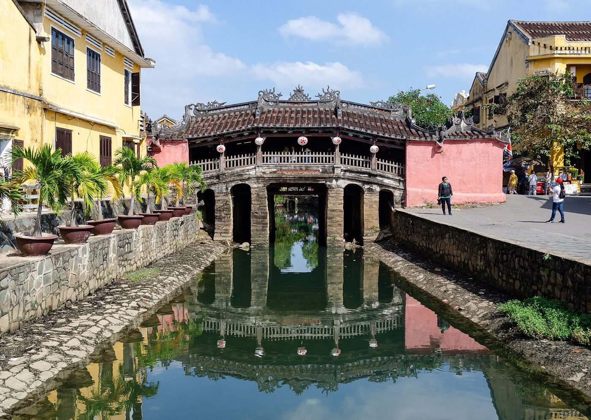
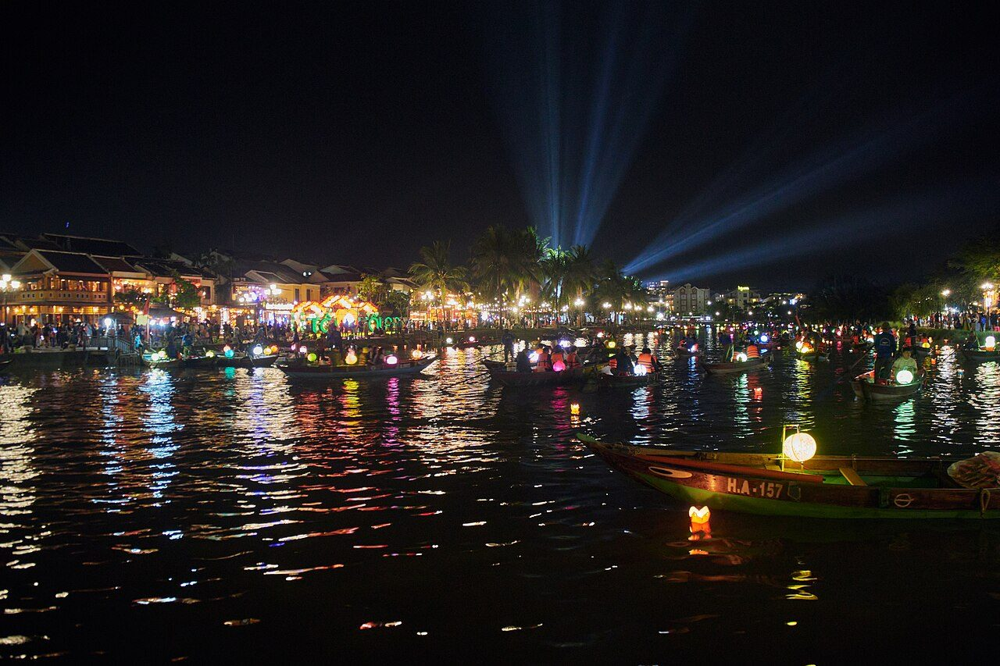
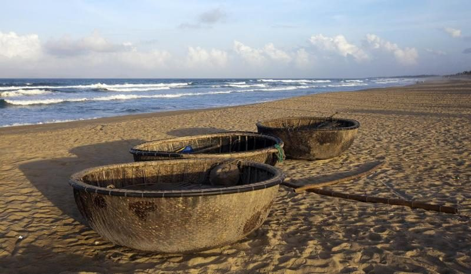
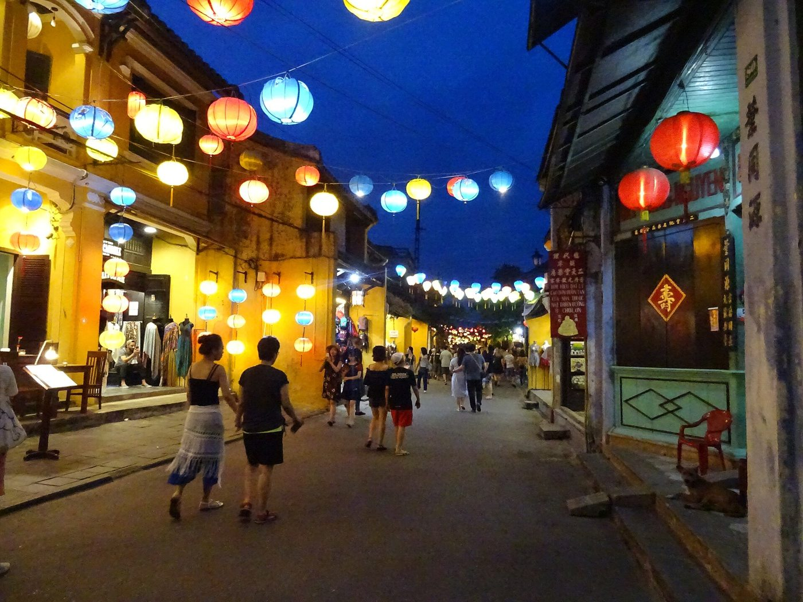
Qué y dónde comer en Hoi An
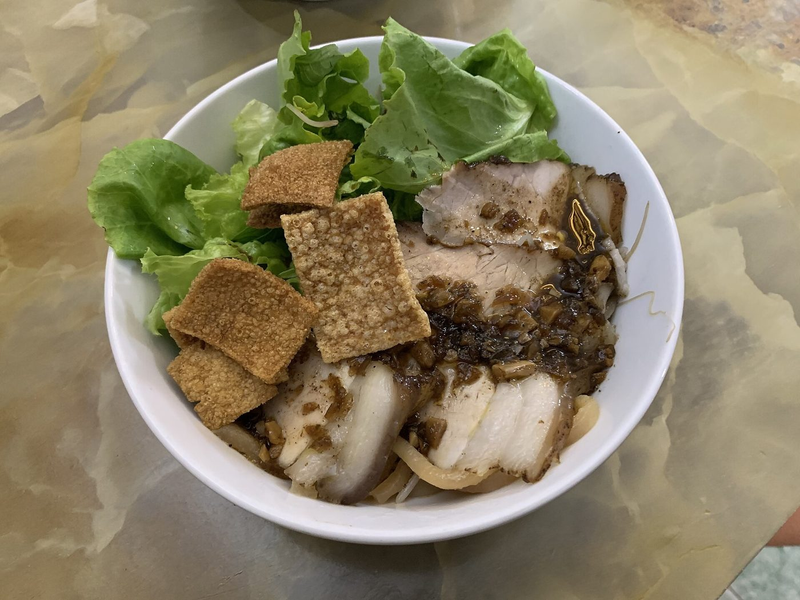
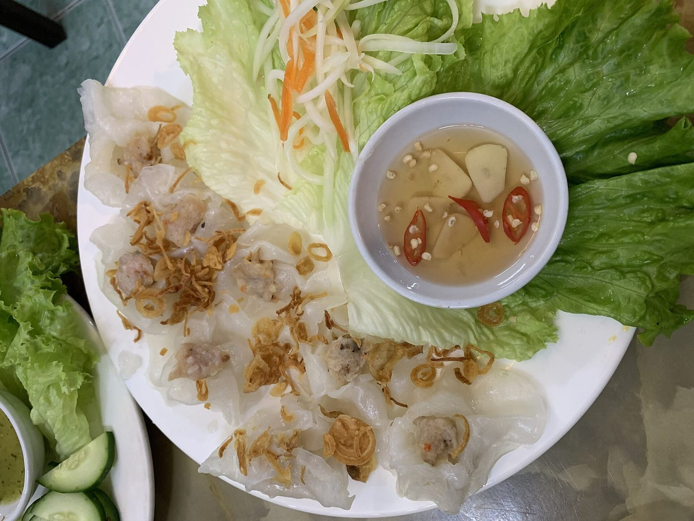
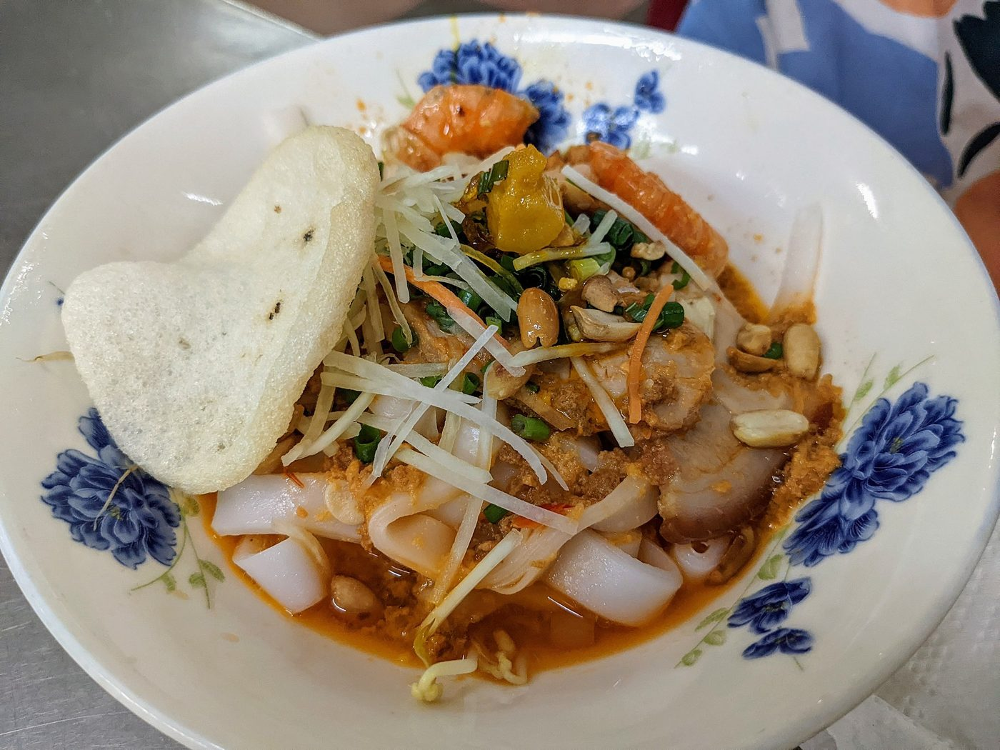
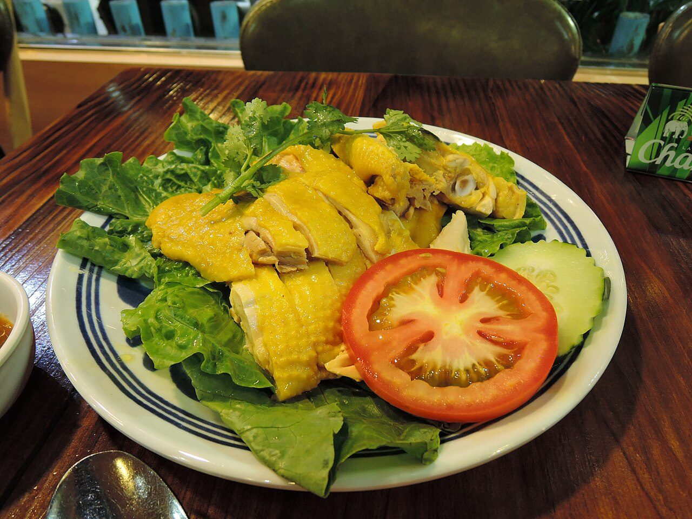
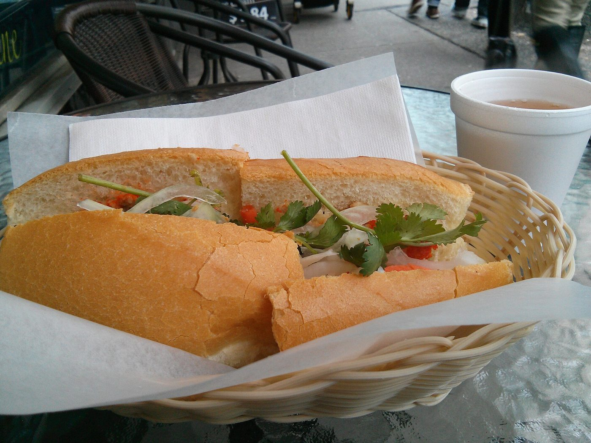
- Bánh mì Phượng — 2B Phan Châu Trinh · el bocadillo que hizo famoso Anthony Bourdain. Cola constante, pero va rápida. 📍 Maps
- Madam Khánh · The Banh Mi Queen — 115 Trần Cao Vân · la alternativa, más casera y con menos turistas. Muchos la prefieren. 📍 Maps
- Cơm gà Bà Buội — 22 Phan Châu Trinh · el arroz con pollo de referencia de la ciudad desde hace décadas. 📍 Maps
- White Rose (Bông Hồng Trắng) — 533 Hai Bà Trưng · la familia que abastece de "rosas blancas" a todo Hoi An; se ven hacer a mano. 📍 Maps
- Morning Glory — 106 Nguyễn Thái Học · de Ms. Vy, la gran embajadora de la cocina de Hoi An. Reservar; también dan clases de cocina. 📍 Maps
- Miss Ly Cafeteria 22 — 22 Nguyễn Huệ · pequeño, familiar y con el mejor wonton frito del casco antiguo. 📍 Maps
- Reaching Out Tea House — 131 Trần Phú · casa de té donde se guarda silencio: el equipo es sordo y se pide con fichas de madera. Una experiencia. 📍 Maps
- Puestos del mercado central — Trần Quý Cáp · el cao lau más barato y auténtico, en mesa compartida. Ir a mediodía. 📍 Maps
El cao lầu es el plato-fetiche: fideos gruesos que —dice la leyenda— solo salen bien con el agua de un pozo concreto de la ciudad, con cerdo, brotes y trocitos crujientes. Y el bánh mì de aquí tiene fama de ser el mejor de Vietnam, así que probad los dos sitios y decidid.
Hue — la capital imperial y el paso más bonito
Jueves 3 → viernes 4 de septiembreEl día del traslado es medio viaje en sí mismo: el Paso de Hai Van, la frontera climática del país, con el mar a un lado y las montañas al otro. Hue fue capital imperial hasta 1945 y conserva la ciudadela, las tumbas de los emperadores repartidas por el campo y una cocina refinadísima —la comida de palacio— que es de lo mejor de Vietnam.
Día 5 · Hoi An → Hai Van Pass → Hue jueves 3 sep
Mañana Salida 08:00–09:00 en coche privado. Primera parada fuerte en las Montañas de Mármol (Marble Mountains), y después el Paso de Hai Van con sus miradores y el búnker americano.
Tarde Lang Co y la laguna de Lap An si encaja de tiempo. Llegada a Hue y check-in. Ciudad Imperial si llegáis con margen (cierra sobre las 17:00–17:30).
Noche Paseo por el río Perfume, puente Trang Tien iluminado y cena tranquila.
Día 6 · Hue esencial y salida a Phong Nha viernes 4 sep
Mañana Si no visteis la Ciudad Imperial, primero eso. Si ya está vista, la tumba de Khai Dinh: compacta, muy fotogénica y distinta a todo (hormigón, mosaicos y dragones).
Tarde Traslado a Phong Nha (~4 h en coche por la costa, o tren hasta Dong Hoi + coche). Check-in en Karst Villas y paseo por el entorno rural si queda luz.
Noche Cena y confirmar la logística del día de cuevas: empresa, hora de recogida y ropa según la opción elegida.
Lo básico que ver en Hue y por el camino
- Montañas de Mármol (Da Nang) — cuevas con santuarios budistas dentro de la roca; la Huyen Khong, con la luz entrando por el techo, es espectacular. Hay ascensor.
- Paso de Hai Van — 21 km de curvas sobre el mar; el "paso de las nubes" que separa el norte del sur climático.
- Lang Co y laguna de Lap An — playa larga y una laguna con criaderos de ostras y montañas al fondo.
- Ciudad Imperial (Hoàng Thành) — 2 h mínimo: Ngo Mon, el Palacio de la Suprema Armonía, la Ciudad Púrpura Prohibida y los jardines en ruinas.
- Tumba de Khai Dinh — la más impactante, mezcla de gótico e imperial chino, con el salón interior cubierto de mosaicos.
- Tumba de Tu Duc — la más bonita en cuanto a paisaje: lagos, pinos y pabellones (si sobra tiempo).
- Pagoda Thien Mu — la torre de siete pisos junto al río Perfume, símbolo de la ciudad.
- Mercado Dong Ba — el mercado grande de Hue, junto al río; sombreros cónicos y comida.
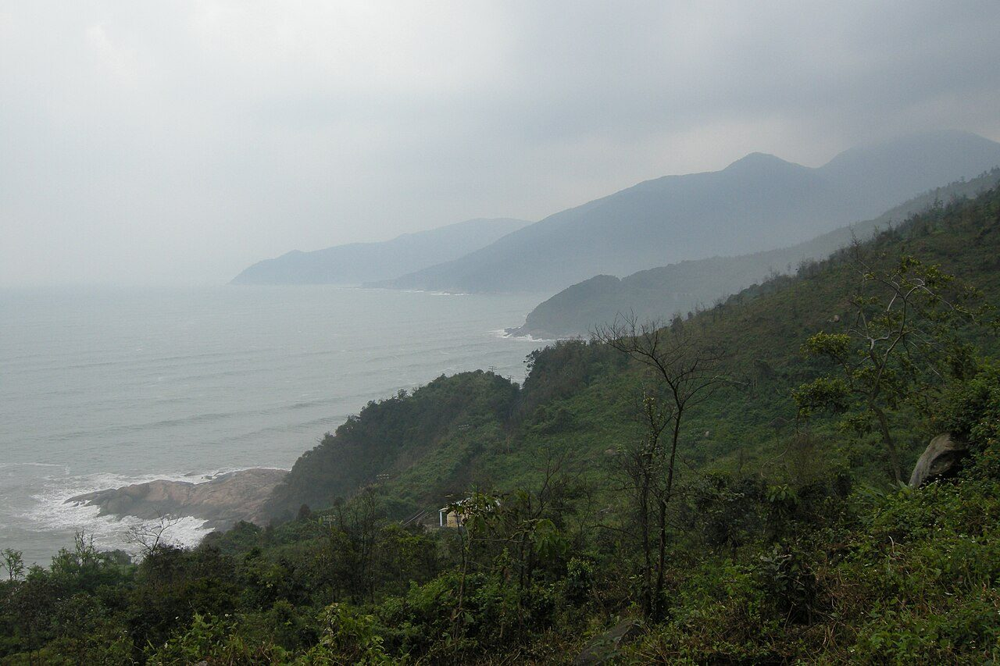
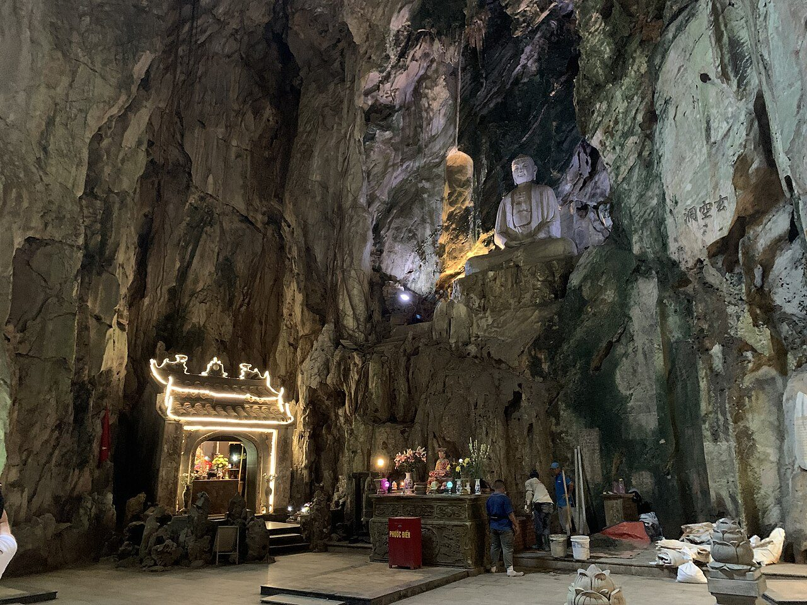
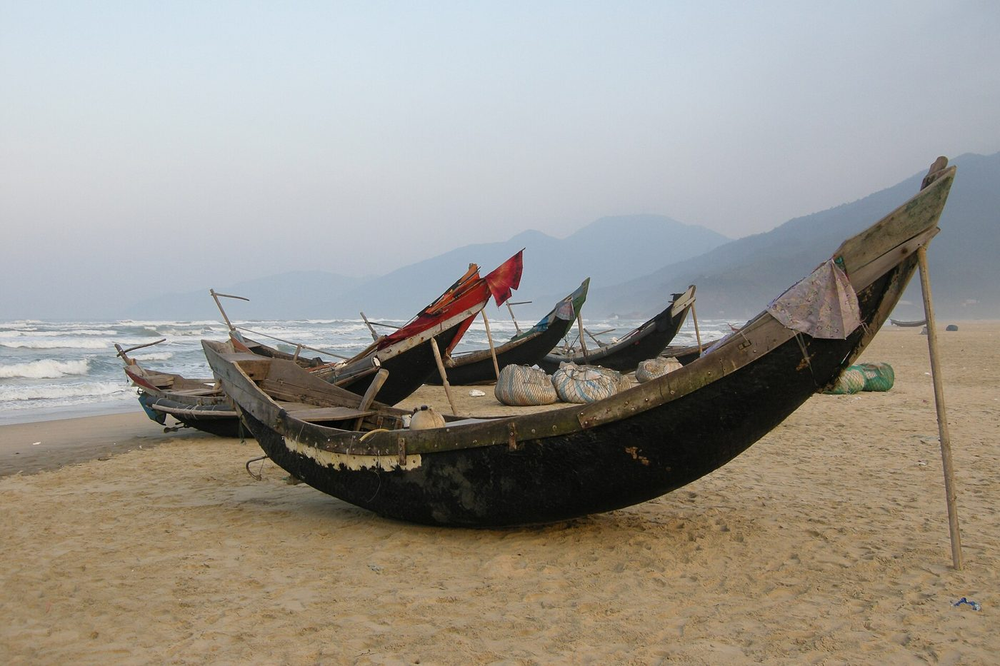
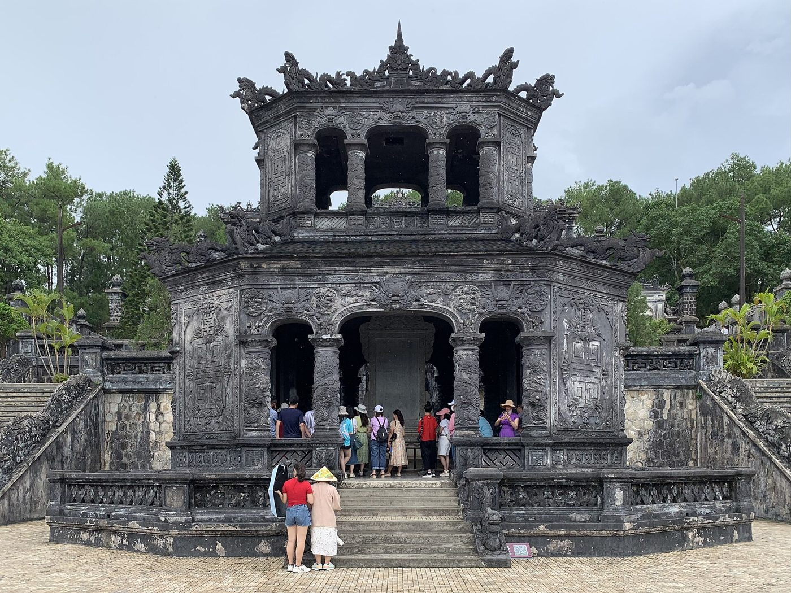
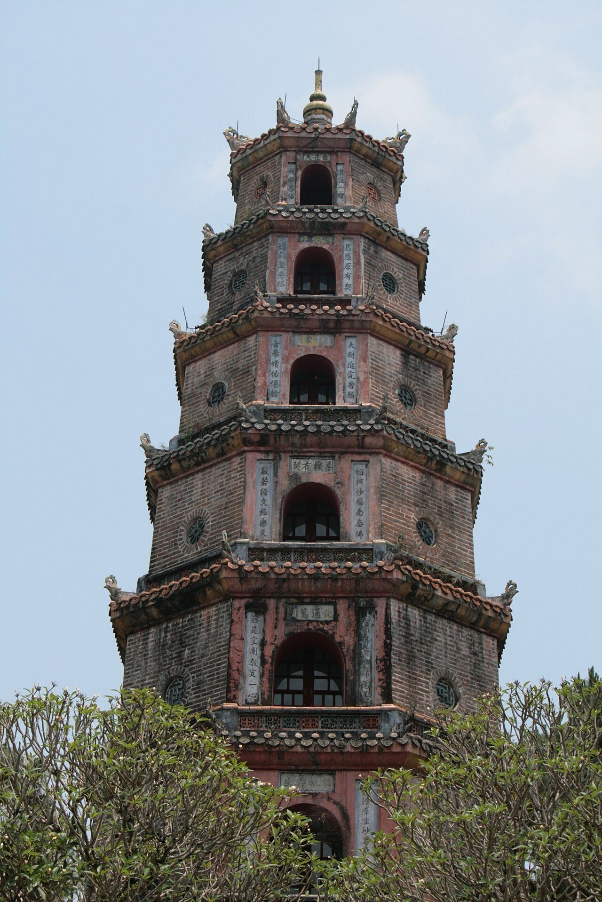
Qué y dónde comer en Hue
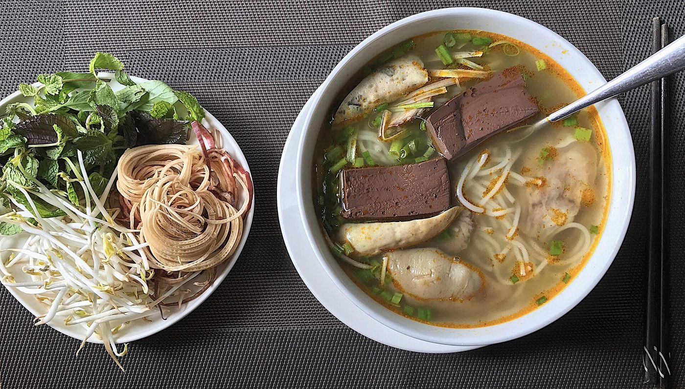
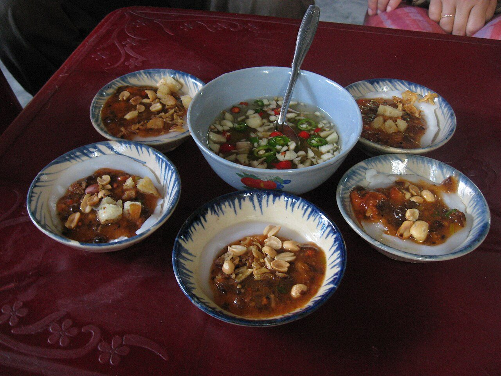
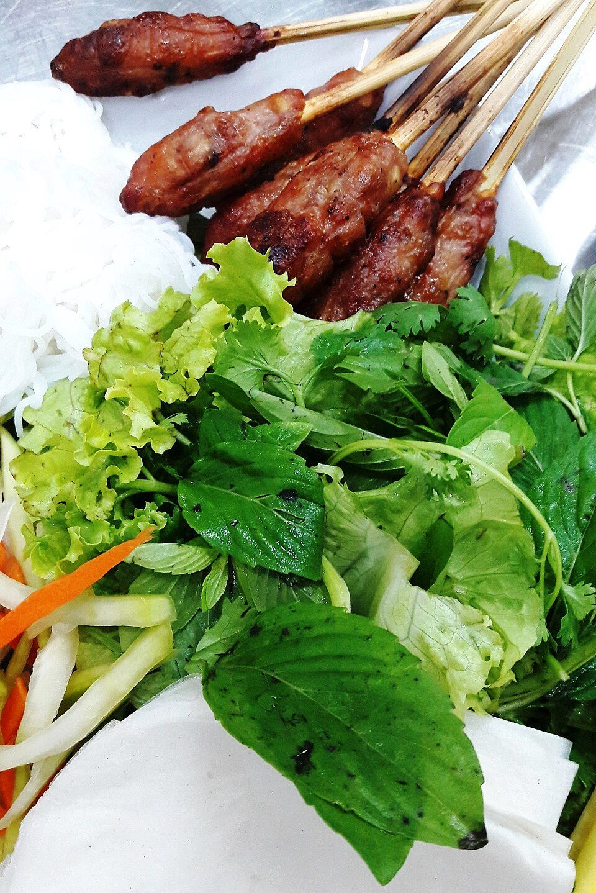
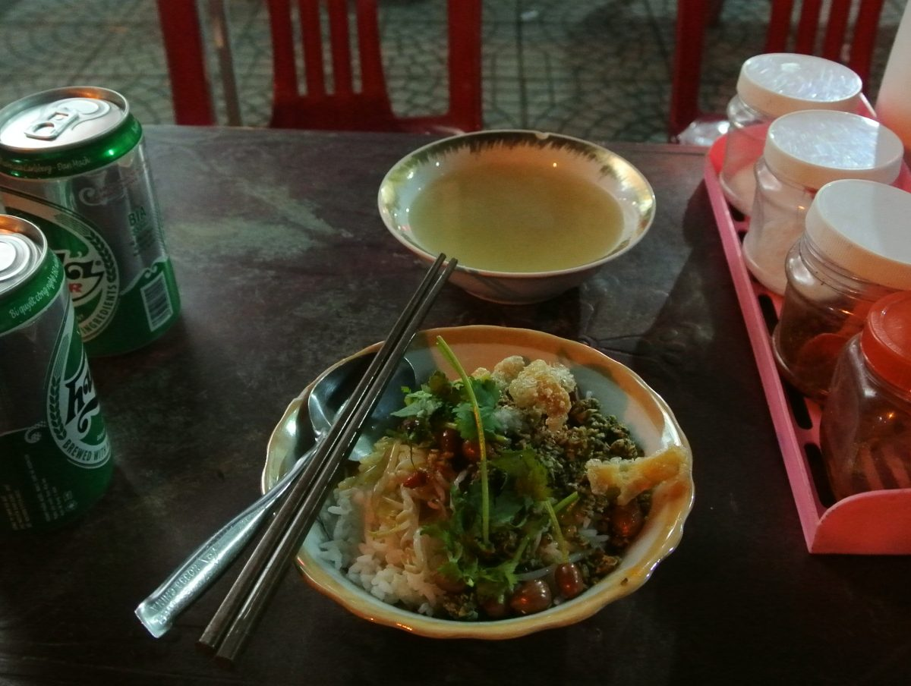
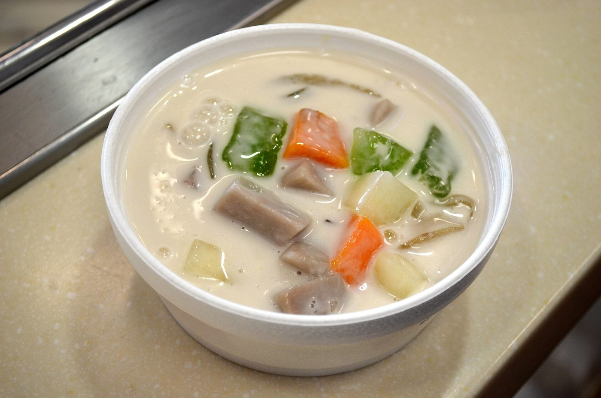
- Bún bò Bà Tuyết — 47 Nguyễn Công Trứ · el bún bò de referencia: caldo con limoncillo y gambas fermentadas. Solo mañanas. 📍 Maps
- Quán Hàng Me — 12 Võ Thị Sáu · la bandeja completa de bánh bèo, nậm, lọc y ram ít. Perfecto para probar de todo de una vez. 📍 Maps
- Bánh bèo Bà Đỏ — 8 Nguyễn Bỉnh Khiêm · la versión de barrio, más barata y más llena de locales. 📍 Maps
- Quán Hạnh — 11 Phó Đức Chính · nem lụi y bánh khoái que te enrollas tú mismo con hierbas. Muy fácil si es vuestra primera vez. 📍 Maps
- Cơm hến Hoa Đông — isla de Cồn Hến · el plato más humilde y más de Hue: arroz frío con almejas diminutas del río. Un euro. 📍 Maps
- Chè Hẻm — 17 Hùng Vương · veinte tipos de chè (dulces de judía, coco, jengibre…) en un callejón. El postre de la ciudad. 📍 Maps
- Liên Hoa — 3 Lê Quý Đôn · cocina vegetariana de pagoda, buenísima y baratísima. Hue es la capital vegetariana del país. 📍 Maps
Hue come en raciones pequeñas y muchas: es herencia de la corte, donde al emperador se le servían decenas de platitos. Aprovechad que solo tenéis una noche y cenad picoteando de todo.
Phong Nha — las cuevas más grandes del mundo
Viernes 4 → domingo 6 de septiembreUn valle rural de búfalos y karst donde está el parque nacional de Phong Nha-Ke Bang, con el mayor sistema de cuevas del planeta —incluida Son Doong, la cueva más grande del mundo, que se visita solo en expediciones de miles de euros—. Vosotros vais a las dos accesibles, que ya son una barbaridad. Dormís en un entorno rural precioso y con muy poca gente.
Día 6 · Llegada al valle viernes 4 sep
Llegada por la tarde, check-in en Karst Villas y paseo corto por los alrededores. Cena tranquila y decidir la opción del día siguiente.
Día 7 · Día de cuevas sábado 5 sep
Mañana Paradise Cave como pieza central en las dos opciones: es más larga, más espectacular y no depende del calor. Salida sobre las 08:00.
Tarde Según la opción elegida: Dark Cave (tirolina, baño de barro, kayak) o Phong Nha Cave en barco (tranquila, fotogénica, sin esfuerzo).
Noche Descanso, cena y preparar el traslado del día siguiente. Nada de planes extra: el día de cuevas ya llena.
Día 8 · Traslado a Ninh Binh domingo 6 sep
Día logístico: check-out y traslado a Tam Coc según la conexión que cerréis (ver el bloque azul). Comida sencilla por el camino y llegada al ecolodge por la tarde.
🔦 Las dos opciones del día de cuevas
Dejadlas las dos preseleccionadas y decidid por la mañana según energía, clima y ganas de mojaros. En ambas, Paradise Cave es el núcleo del día.
| Opción | Qué incluye | Para quién | Desgaste |
|---|---|---|---|
| A · Aventura | Paradise Cave + Dark Cave (tirolina, barro, kayak) | Si queréis un día activo, diferente y memorable, sin miedo a acabar hechos polvo. | Alto |
| B · Cómoda / paisaje | Paradise Cave + Phong Nha Cave en barco por el río Son | Si queréis cuevas espectaculares, fotos y naturaleza sin exigencia física. | Medio |
| Hora | Opción A · aventura | Opción B · cómoda |
|---|---|---|
| 08:00 | Salida desde el alojamiento | Salida desde el alojamiento |
| 08:30–12:00 | Paradise Cave | Paradise Cave |
| 12:00–13:00 | Comida y pausa | Comida y pausa |
| 13:30–16:30 | Dark Cave: agua, barro y actividad física | Phong Nha Cave en barco: tranquila y paisajística |
| 17:00 | Vuelta al alojamiento | Vuelta al alojamiento |
🚆 El traslado del 6 de septiembre: Phong Nha → Ninh Binh
Es el día con más riesgo de fricción del viaje. Hay tres formas de hacerlo y conviene cerrarla antes de salir de España:
- Tren desde Dong Hoi (45 min en coche desde Phong Nha) hasta la estación de Ninh Binh: ~6–8 h, cómodo, barato y con paisaje. Hay trenes de día y nocturnos con literas.
- Vuelo Dong Hoi (VDH) → Hanói (~1 h 15) + coche Hanói–Ninh Binh (~1 h 45). Lo más rápido si encontráis un vuelo a buena hora, pero suma dos traslados por tierra.
- Autobús-cama directo (sleeping bus): lo más barato, ~8–9 h, pero el menos cómodo con maletas.
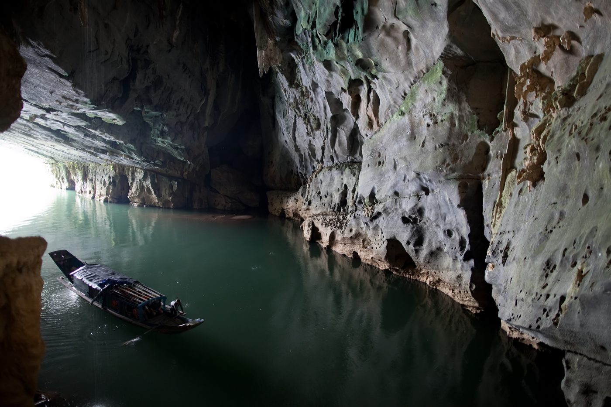
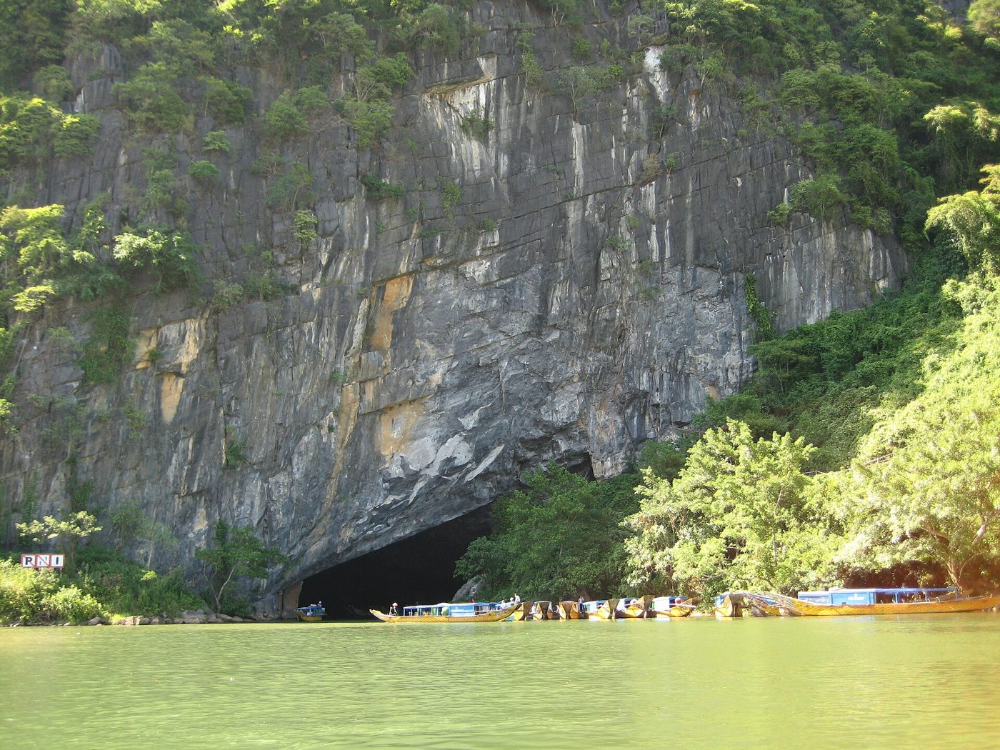
Qué y dónde comer en Phong Nha
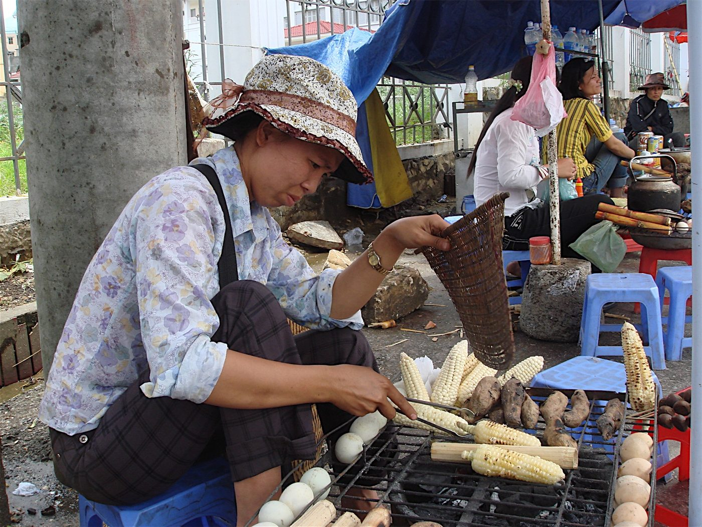
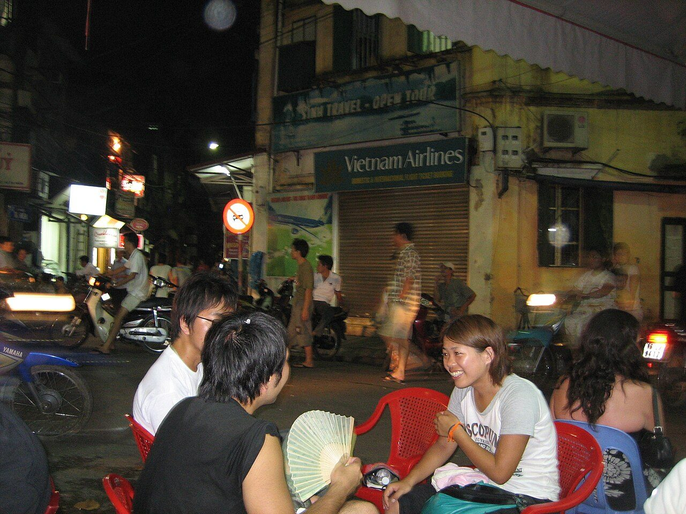
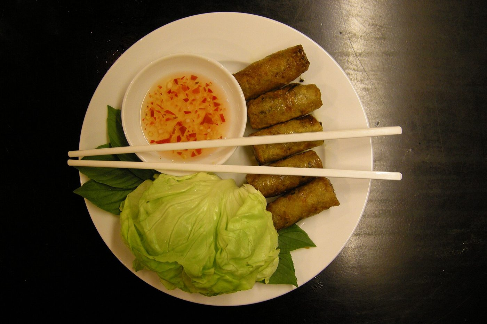
- The Pub With Cold Beer — valle de Bong Lai · una casa de campo al final de un camino de tierra: pollo a la brasa, hamaca y vistas. La experiencia más recordada de Phong Nha. 📍 Maps
- Bomb Crater Bar — valle de Bong Lai · bar junto a un cráter de bomba convertido en estanque, con atardeceres y comida sencilla. 📍 Maps
- Momma D's (Đức Hiếu) — pueblo de Phong Nha · comida casera vietnamita en mesa compartida, cantidades generosas. 📍 Maps
- Phong Nha Farmstay / Bamboo Cafe — Cù Lạc · la cocina de los farmstays, fiable y con opciones occidentales si un día apetece descansar del arroz. 📍 Maps
Aquí se come donde se duerme o en cuatro sitios del valle, y precisamente por eso se come bien: producto de la huerta y del río. Reservad la cena en el alojamiento si volvéis tarde de las cuevas.
Tam Coc y Ninh Binh — la bahía de Ha Long en tierra
Domingo 6 → martes 8 de septiembreLos mismos peñones kársticos de Ha Long pero saliendo de un mar de arrozales, y con caminos rurales entre medias para recorrerlos en bici. Se duerme en un ecolodge en el campo, se navega en barca de remos —muchas remeras reman con los pies— y se sube a un mirador que es la foto más famosa del norte de Vietnam. Es la etapa más bonita a ras de suelo de todo el viaje.
Día 8 · Llegada a Tam Coc domingo 6 sep
Tarde Llegada al Nature Garden Ecolodge, paseo en bici por los arrozales si queda luz y primer contacto con el paisaje.
Noche Cena local y descanso. Preparar Hang Mua y Trang An para mañana.
Día 9 · El día grande de Ninh Binh lunes 7 sep
Mañana Hang Mua muy temprano (05:30–06:00): los ~500 escalones hasta el mirador del dragón, antes del calor y de los grupos. Desayuno después.
Mediodía Trang An en barca: 2–3 horas navegando entre cuevas inundadas y templos. Es la actividad acuática principal, mejor que repetir con Tam Coc.
Tarde Pagoda Bich Dong, ruta en bici por los arrozales y, si sobra energía, algún mirador o paseo por Tam Coc.
Noche Cena tranquila y preparar la salida a Hanói.
Día 10 · Última mañana y vuelta a Hanói martes 8 sep
Mañana Si quedó pendiente Trang An, hacedlo temprano. Alternativa: Hoa Lu (la capital de Vietnam en el siglo X) más bici suave. Check-out.
Tarde Traslado a Hanói (~1 h 45), check-in en el Eliana Robusta y tarde ligera por el Old Quarter.
Noche Cena en Hanói y mochila pequeña preparada para el crucero —la maleta grande se puede dejar en el hotel—.
Lo básico que ver en Ninh Binh
- Hang Mua — 500 escalones hasta la estatua del dragón; la mejor panorámica de todo el valle. Al amanecer, sin gente.
- Trang An — Patrimonio de la Unesco: rutas de barca de 2 a 3 h que atraviesan cuevas por las que hay que agachar la cabeza. La ruta 1 es la clásica; la 2 y la 3 tienen menos gente.
- Tam Coc — "las tres cuevas": el paseo en barca por el río Ngo Dong entre arrozales.
- Pagoda Bich Dong — templo de tres niveles encajado en la montaña, subiendo entre cuevas.
- Hoa Lu — la antigua capital del siglo X, con los templos de las dinastías Dinh y Le.
- Arrozales en bici — el plan que más se recuerda: caminos entre campos, búfalos y niños saludando.
- Bai Dinh — el complejo budista más grande del sudeste asiático; monumental, moderno y opcional.
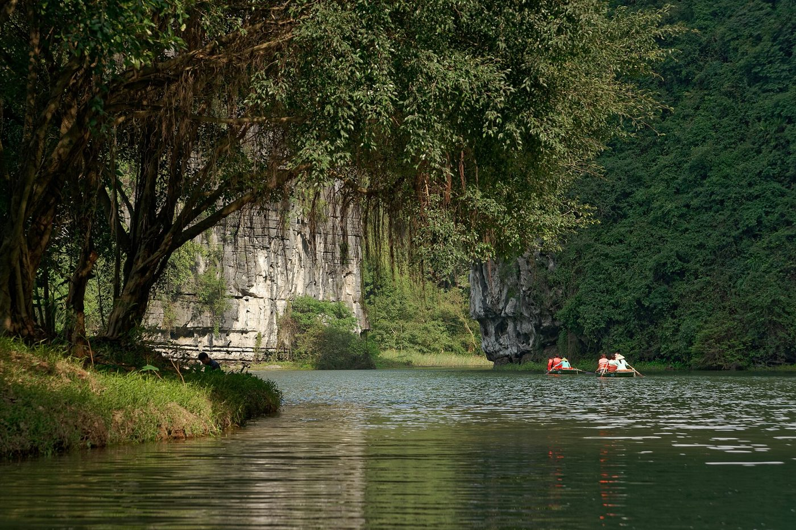
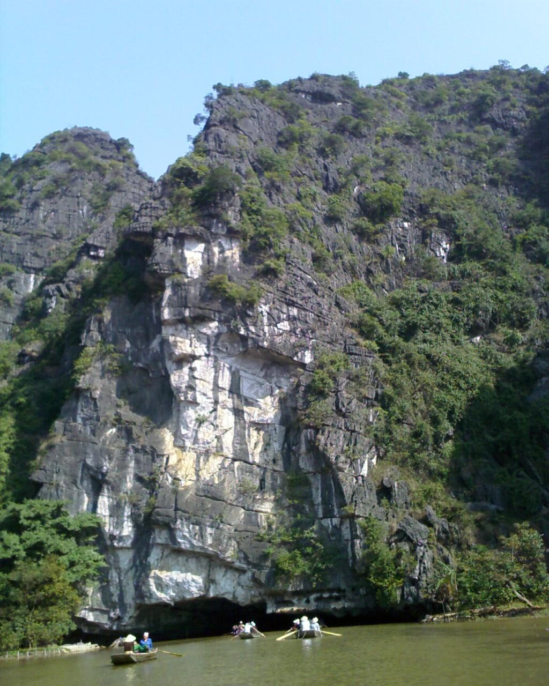
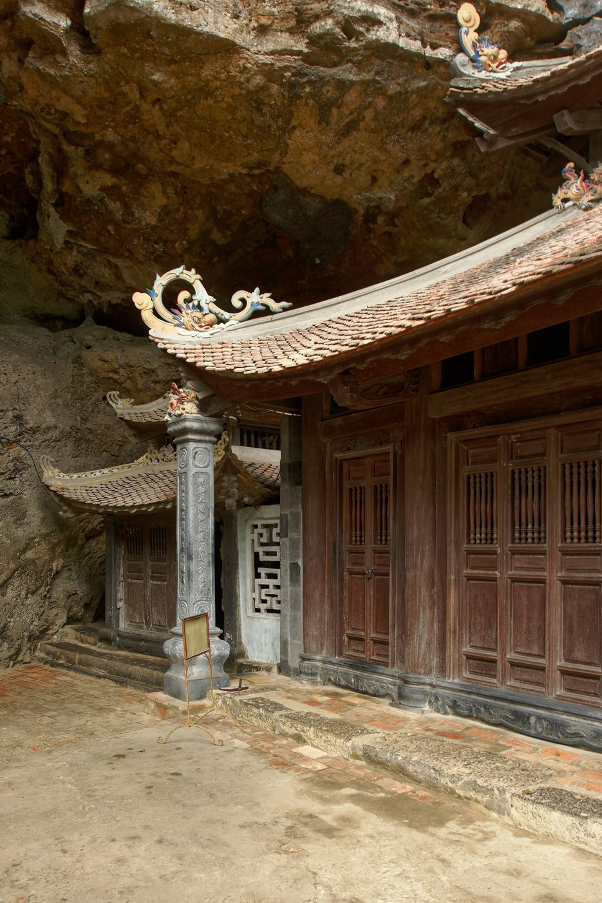
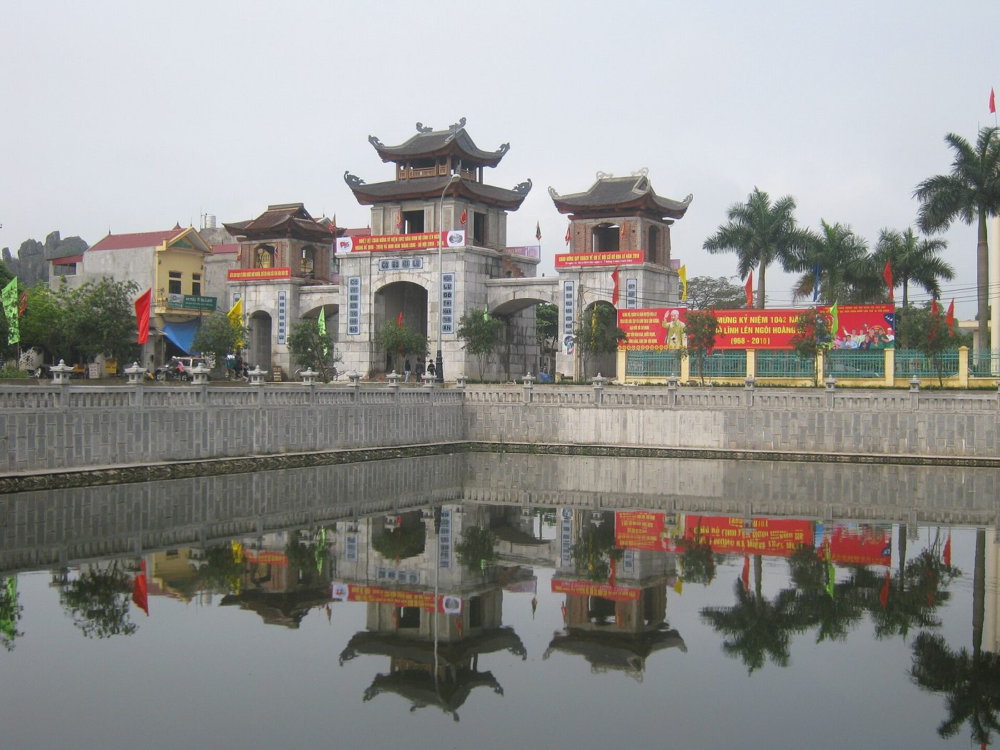
Qué y dónde comer en Ninh Binh
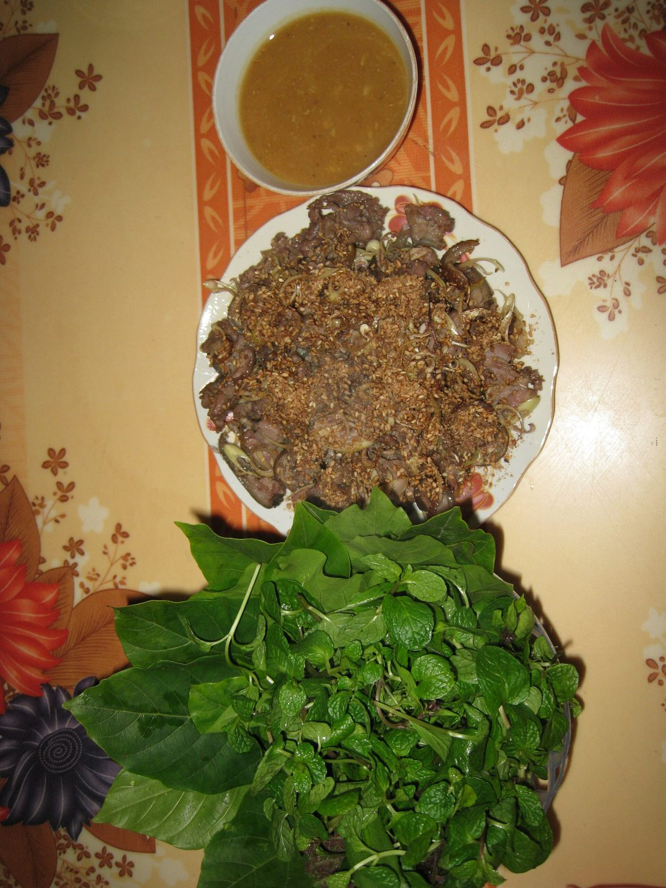
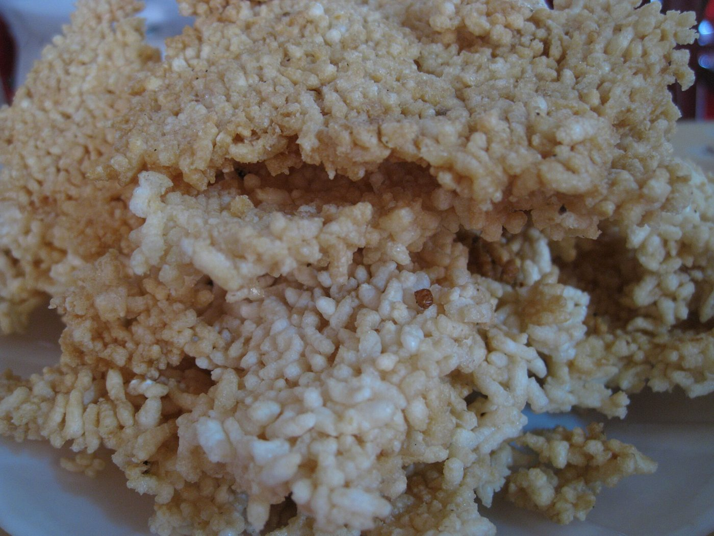
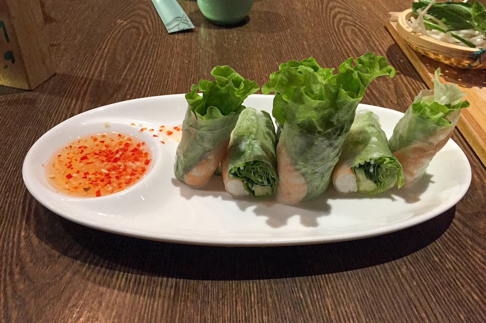
- Chinh Thu — Tam Cốc · el clásico de la zona para probar la cabra en sus variantes (a la brasa, con limón, con sésamo) y el arroz crujiente. 📍 Maps
- Đức Dê — ciudad de Ninh Bình · muy popular entre vietnamitas; cabra y cơm cháy en versión de restaurante grande. 📍 Maps
- Chookie's Beer Garden — Tam Cốc · el punto de encuentro del pueblo: comida vietnamita y occidental, cerveza fría y buena información de rutas. 📍 Maps
- Father Cooking Restaurant — Tam Cốc · pequeño, familiar y muy bien valorado; ideal para cenar después del día largo. 📍 Maps
La cabra de montaña se cría suelta por los peñones y aquí es la especialidad: se pide con cơm cháy, que es una torta de arroz frito crujiente sobre la que se echa un guiso. Pedid una ración de cada para compartir y no os quedáis cortos.
Lan Ha Bay — la bahía sin multitudes
Miércoles 9 → jueves 10 de septiembreLan Ha es la continuación de la bahía de Ha Long por el lado de la isla de Cat Ba: idénticos islotes de piedra caliza saliendo del agua, pero con menos tráfico de barcos, playitas escondidas y pueblos flotantes de pescadores. Elegir esta bahía en vez de la clásica es de las mejores decisiones del itinerario.
Día 11 · Embarque y bahía miércoles 9 sep
Mañana Recogida en el hotel de Hanói y traslado al puerto (~2 h 30 por la autopista). Embarque y comida a bordo mientras el barco sale a la bahía.
Tarde Actividades según programa: kayak entre los islotes, baño desde el barco, alguna cueva o playa, y visita a un pueblo flotante. Atardecer en cubierta.
Noche Cena a bordo, pesca de calamares desde la barandilla si la ofrecen, y noche en el camarote. Desconectad: la cobertura va y viene.
Día 12 · Fin de crucero y tarde en Hanói jueves 10 sep
Mañana Taichí en cubierta al amanecer (opcional, pero el amanecer sí), actividad corta, brunch y desembarque. Traslado de vuelta a Hanói.
Tarde Check-in en el Heritage Ham Long, compras ligeras (café, seda, souvenirs), masaje o descanso y paseo por el French Quarter y Hoan Kiem.
Noche Cena especial sin desplazamiento largo. Noche tranquila.
⛵ Qué esperar del crucero
- Ritmo: comida nada más embarcar, actividades por la tarde, cena, y al día siguiente una actividad corta antes de volver. En total se está a bordo unas 22 horas.
- Qué llevar: mochila pequeña (la maleta grande se queda en el hotel de Hanói), bañador, chanclas, crema, ropa ligera para la cena, y algo de abrigo fino si refresca de noche en cubierta.
- Qué suele estar incluido: traslados, comidas, kayak o barca de bambú y las entradas de la bahía. Las bebidas casi nunca — y suelen ser caras a bordo.
- Mareo: la bahía está protegida y el agua está prácticamente plana. No hace falta pastilla salvo que seáis muy sensibles.
- Meteorología: septiembre es temporada de tifones en el golfo de Tonkín. Si las autoridades cierran la bahía, los cruceros cancelan y reembolsan o reprograman. Es raro, pero conviene saberlo.
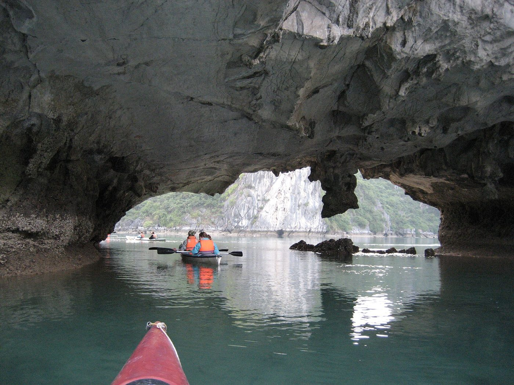
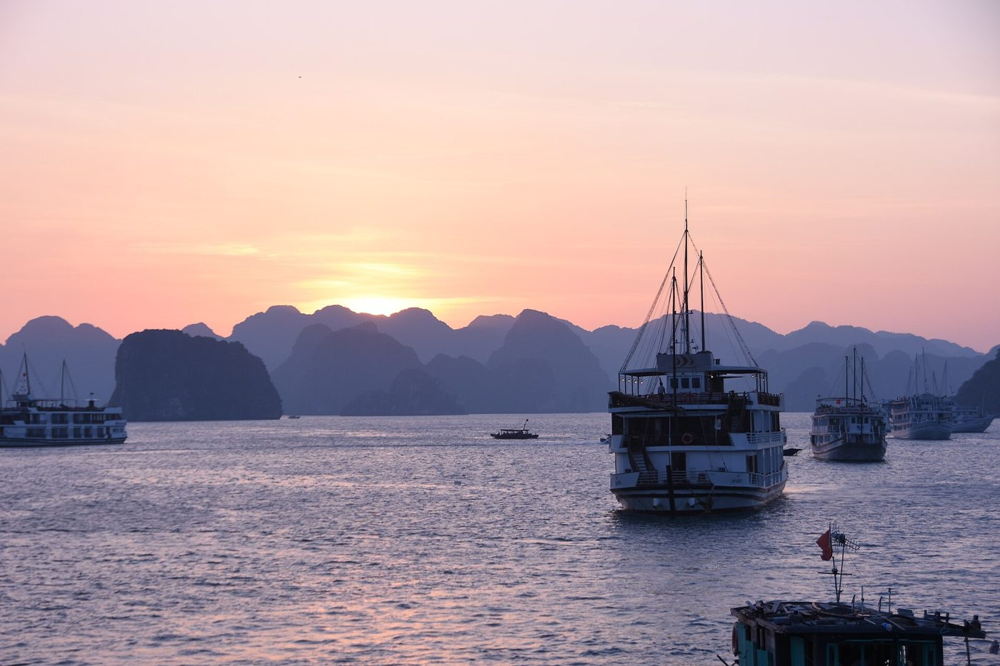
Qué se come a bordo (y en Cat Ba)
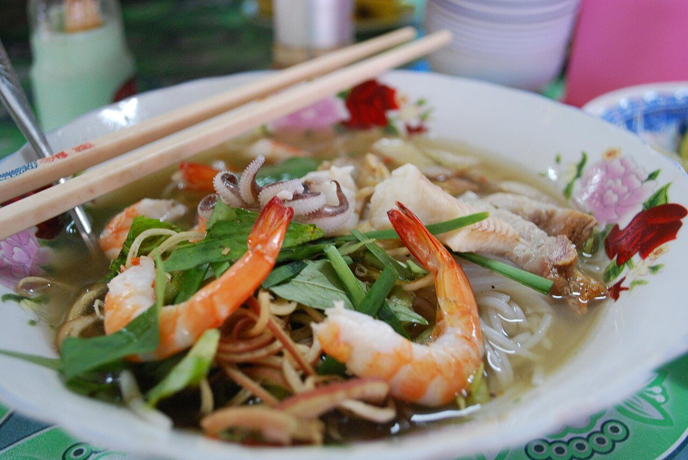
La comida del crucero es un bufé o menú compartido con mucho marisco, y suele estar bastante bien. Si el barco para en un pueblo flotante, ahí es donde se compran los mejores calamares y las ostras. Y si alguna vez pasáis por Hai Phong de camino, el bánh đa cua es la sopa insignia de la zona.
Hanói final — compras, cafés y despedida
Jueves 10 → sábado 12 de septiembreVolvéis a Hanói con la ciudad ya "aprendida", que es cuando mejor se disfruta: sin monumentos obligatorios, con tiempo para los cafés, el mercado y lo que quedó pendiente el primer día. El 12 salís temprano, así que el 11 es el último día real.
Día 13 · Hanói sin prisa viernes 11 sep
Mañana Mercado Dong Xuan o compras finales por Hang Gai (seda) y Hang Bac. Cafés por el Old Quarter. Si falta algo cultural: Museo de Etnología o Templo de la Literatura.
Tarde Bat Trang (el pueblo alfarero, a 30 min) solo si apetece una excursión suave; si no, quedarse en la ciudad. Maletas y revisión de compras.
Noche Última cena temprano, documentación y equipaje listos, y a dormir pronto: el vuelo sale a las 08:45.
Día 14 · Vuelo a casa sábado 12 sep
Salida del hotel sobre las 06:00 y vuelo HAN 08:45 → MAD 20:45. Se llega a Madrid el mismo día, con el cuerpo cambiado de hora y la cabeza todavía en el Old Quarter.
Qué hacer y qué comprar
- Café vietnamita — el mejor souvenir: robusta de Buon Ma Thuot, mejor en grano y en tienda especializada. Y un filtro phin de aluminio por dos euros.
- Seda en Hang Gai — pañuelos, camisas y ropa a medida en un par de días.
- Mercado Dong Xuan — el mercado grande y caótico del Old Quarter; regatear con sonrisa.
- Bat Trang — cerámica desde hace 700 años, a 30 min en coche; se puede pintar tu propia pieza.
- Marionetas de agua — el espectáculo del teatro Thang Long, si no lo visteis el primer día.
- Un último masaje — 10–15 € por una hora en un sitio decente. Rendidos como llegaréis, es obligatorio.
- Cafés con vistas — los de la Torre de la Tortuga (Cafe Pho Co, entrando por una tienda de seda) o los del barrio de la catedral.
Guía de comida vietnamita
Vietnam se come en la calle, en taburetes de plástico de 25 cm y con una servilleta de papel rosa. La cocina cambia radicalmente de norte a centro: en Hanói es sutil, salada y a base de caldos; en Hue, picante, refinada y en raciones pequeñas; en Hoi An, dulce, con hierbas y herencia china. Estos son los platos que hay que cazar en cada parada.
| Dónde | Lo que no os podéis ir sin probar | Truco |
|---|---|---|
| Hanói | Phở bò · bún chả · chả cá · bánh cuốn · cà phê trứng · bia hơi | Desayunar en la calle y cenar temprano. El bia hơi se sirve hasta las 21:00 y luego la calle se apaga. |
| Hoi An | Cao lầu · bánh bao bánh vạc · hoành thánh · cơm gà · bánh mì · chè bắp | El cao lầu solo se hace aquí. Probad el bánh mì en Phượng y en Madam Khánh y elegid bando. |
| Hue | Bún bò Huế · bánh bèo/nậm/lọc · nem lụi · cơm hến · chè · cocina vegetariana | Pedid varias raciones pequeñas para compartir: así es como se come aquí de verdad. |
| Phong Nha | Gà nướng · cháo cá del río Son · verduras del huerto | Se cena en el alojamiento o en cuatro sitios del valle. Reservad si volvéis tarde de las cuevas. |
| Ninh Binh | Dê núi (cabra) · cơm cháy · ốc núi · miến lươn | Cabra + arroz crujiente es el combo local. Una ración de cada para dos personas va sobrada. |
| Lan Ha Bay | Hải sản · chả mực · ngao hấp | Las bebidas a bordo no suelen ir incluidas y son caras: mirad el precio antes de pedir. |
Cómo pedir sin meter la pata
Reglas que funcionan siempre: comer donde haya vietnamitas y rotación de gente; desconfiar de las cartas con veinte cocinas distintas; los puestos especializados en un solo plato son los mejores; el hielo industrial (con agujero en el centro) es seguro; y llevar siempre billetes pequeños porque en la calle nadie tiene cambio de 500.000 dong.
Alojamientos: los reservados y las alternativas
Primero, lo que ya está cerrado según el planning. Después, alternativas por si algo se cae o si queréis comparar. Cada hotel enlaza a Google Maps (fotos y reseñas) y a Booking con las fechas de esa etapa ya cargadas (2 adultos, 1 habitación). Las estrellas ★ son recomendación propia para este viaje concreto, no la categoría oficial.
| Hotel | Zona | Gama | €/noche | Recom. | Por qué / detalles |
|---|---|---|---|---|---|
| ① Hanói · llegada · 30 ago → 31 ago | |||||
| ✓ reservado Le Premier Hotel 🏨 Booking · 30–31 ago | 27 Hàng Hành, Hoan Kiem | Medio €€ | 50–80 € | ★★★★☆ | En un callejón de cafés a 200 m del lago: lo más céntrico posible para un día y medio a tope. 📍🧼💸 |
| La Siesta Premium Hang Be 🏨 Booking · 30–31 ago | Old Quarter | Boutique €€€ | 110–150 € | ★★★★★ | El boutique mejor valorado del Old Quarter: servicio excepcional, spa y azotea. 📍🧖🧼🌅 |
| Peridot Grand Luxury Boutique 🏨 Booking · 30–31 ago | Hoan Kiem | Boutique €€ | 80–120 € | ★★★★☆ | Piscina en azotea con vistas, muy buena relación calidad-precio y desayuno notable. 🏊📍🌅 |
| ② Hoi An · 31 ago → 3 sep | |||||
| ✓ reservado Zen Retreat Hoi An 🏨 Booking · 31 ago–3 sep | Hoi An | Boutique €€ | 60–100 € | ★★★★½ | Tranquilo y con piscina, la base ideal para tres noches de paseo, bici y playa. 🏊🤫🌿 |
| Little Riverside Hoi An 🏨 Booking · 31 ago–3 sep | Junto al río | Boutique €€€ | 110–160 € | ★★★★★ | Piscina infinita sobre el río y a 10 min andando del casco antiguo. Muy bien valorado. 🏊🧖🌅 |
| Alojamientos de An Bang Beach 🏨 Booking · 31 ago–3 sep | An Bang | Varios €–€€€ | 45–150 € | ★★★★☆ | Opción "playa": se duerme frente al mar y se va al casco antiguo en bici (20 min) o Grab. 🏖🤫🌿 |
| ③ Hue · 3 sep → 4 sep · POR RESERVAR | |||||
| Meliá Vinpearl Hue 🏨 Booking · 3–4 sep | Centro, junto al río | Medio-alto €€€ | 70–110 € | ★★★★½ | La propuesta del planning: torre céntrica con piscina y vistas al río Perfume. Cómodo para una noche de paso. 🏊📍🌅 |
| Azerai La Residence 🏨 Booking · 3–4 sep | Orilla sur del río | Lujo €€€€ | 150–220 € | ★★★★★ | Mansión art déco de 1930 con jardines y piscina frente a la ciudadela. El capricho de Hue. 🏊🌿🧖🍽 |
| Alba Spa Hotel 🏨 Booking · 3–4 sep | Pham Ngu Lao | Medio €€ | 40–65 € | ★★★★☆ | Muy buena relación, spa incluido y en la zona de restaurantes. De sobra para una noche. 💸🧖📍 |
| ④ Phong Nha · 4 sep → 6 sep · POR RESERVAR | |||||
| Karst Villas Phong Nha 🏨 Booking · 4–6 sep | Valle de Phong Nha | Boutique €€ | 55–90 € | ★★★★½ | La propuesta del planning: villas con piscina mirando a los peñones. Organizan los tours de cuevas. 🏊🌅🌿🚗 |
| Phong Nha Farmstay 🏨 Booking · 4–6 sep | Cù Lạc, entre arrozales | Medio €€ | 45–75 € | ★★★★☆ | El pionero de la zona: ambiente de casa rural, buena cocina y toda la información de cuevas. 🌾🍽🚗💸 |
| Chay Lap Farmstay 🏨 Booking · 4–6 sep | Chày Lập | Medio €€ | 50–85 € | ★★★★☆ | Bungalows entre huertas con piscina, junto al río. Muy tranquilo, algo apartado del pueblo. 🏊🤫🌿 |
| ⑤ Tam Coc · Ninh Binh · 6 sep → 8 sep | |||||
| ✓ reservado Nature Garden Ecolodge 🏨 Booking · 6–8 sep | Tam Cốc | Ecolodge €€ | 45–75 € | ★★★★½ | Entre arrozales y con bicis para moverse por los caminos rurales, que es justo el plan de esta etapa. 🌾🤫🌿🚲 |
| Tam Coc Garden Resort 🏨 Booking · 6–8 sep | Entre montañas | Boutique €€€ | 100–150 € | ★★★★★ | El más bonito de la zona: casas de piedra con jardín, piscina y silencio absoluto. 🏊🤫🌿🍽 |
| ⑥ Hanói · noche puente · 8 sep → 9 sep | |||||
| ✓ reservado Eliana Robusta Hotel 🏨 Booking · 8–9 sep | Old Quarter | Medio €€ | 45–75 € | ★★★★☆ | Céntrico y práctico para una noche de paso: al día siguiente os recogen aquí para el crucero. 📍🧼💸 |
| ⑦ Crucero Lan Ha Bay · 9 sep → 10 sep | |||||
| ✓ reservado Bat Group Trading Transport and Tourism Co. | Lan Ha Bay | Crucero | 120–200 €/pax | ★★★★½ | Una noche a bordo con pensión completa, kayak y traslados desde Hanói incluidos. Confirmad hora de recogida la víspera. ⛵🍽🚗🌅 |
| ⑧ Hanói · final · 10 sep → 12 sep | |||||
| ✓ reservado Heritage Ham Long Hotel & Spa 🏨 Booking · 10–12 sep | Hàm Long, French Quarter | Medio €€ | 55–85 € | ★★★★½ | En el barrio francés, más tranquilo que el Old Quarter y a 10 min andando del lago. Con spa para el último masaje. 🧖🤫📍🧼 |
🏨 El botón de Booking abre la búsqueda de ese hotel con las fechas de la etapa ya puestas para dos personas. El nombre abre Google Maps. Precios orientativos para 2026.
Cómo moverse por Vietnam
Regla general del viaje: en ciudad, Grab; entre ciudades, coche privado o tren; en el campo, bicicleta. La moto queda descartada salvo experiencia previa: el tráfico vietnamita tiene sus propias reglas y septiembre es mes de lluvias.
| Trayecto | Recomendado | Tiempo / precio orientativo | Notas |
|---|---|---|---|
| Aeropuerto Noi Bai → Hanói | Grab o taxi con precio cerrado | 45 min · 12–18 € | Los hoteles ofrecen traslado por algo más. Evitad los taxis que os aborden en la terminal. |
| Por Hanói | Grab (coche o moto) y Xanh SM (taxis eléctricos) | 1–4 € por trayecto | Precio cerrado en la app, sin regateo. Grab Bike es rapidísimo pero solo si os atrevéis. |
| Da Nang → Hoi An | Coche privado o Grab | 45 min · 15–22 € | Con el vuelo llegando a las 20:35, mejor dejarlo contratado con el hotel. |
| Por Hoi An | A pie y bicicleta | Bici gratis en casi todos los hoteles | El casco antiguo es peatonal en las horas centrales y por la noche. |
| Hoi An → Hue | Coche privado con paradas | 4–5 h con paradas · 70–110 € | La mejor decisión del viaje: Marble Mountains, Hai Van y Lang Co por el camino. Pactad las paradas antes. |
| Hue → Phong Nha | Coche privado o tren a Dong Hoi + coche | 4 h coche (80–120 €) · 3 h tren (6–10 €/pax) | El tren es cómodo y con paisaje, pero luego hay 45 min de Dong Hoi a Phong Nha. |
| Cuevas de Phong Nha | Tour organizado o conductor de día completo | Día completo · 25–45 €/pax | Con recogida en el alojamiento. Moto solo con experiencia y buen tiempo. |
| Phong Nha → Ninh Binh | Tren desde Dong Hoi (o vuelo + coche) | 6–8 h tren · 15–30 €/pax | El día logístico del viaje. Reservad billetes con antelación en temporada alta. |
| Por Ninh Binh | Bicicleta para casi todo | Incluida en el alojamiento | Grab/taxi solo para Hang Mua al amanecer o si llueve. Aquí el desplazamiento es parte del plan. |
| Ninh Binh → Hanói | Coche privado o limousine van | 1 h 45 · 45–70 € coche · 8–12 €/pax van | Las "limousine van" son furgonetas de 9 plazas con asientos amplios; se reservan por WhatsApp o en el hotel. |
| Hanói → Lan Ha Bay | Incluido en el crucero | 2 h 30 por autopista | Recogida en el hotel. Confirmad la hora la noche anterior. |
📱 Las apps imprescindibles
- Grab — coches, motos y hasta comida a domicilio. Funciona en todas las ciudades del viaje.
- Xanh SM — taxis eléctricos vietnamitas, a veces más baratos que Grab y siempre limpios.
- Google Maps offline — descargad el mapa de Vietnam antes de salir.
- Google Translate con vietnamita descargado: la cámara traduce las cartas de los puestos.
- Baemin / ShopeeFood — comida a domicilio si un día llueve a mares.
🛵 Cruzar la calle (en serio)
- Se cruza andando despacio y sin parar: las motos calculan tu trayectoria y te esquivan.
- Lo peligroso es correr o dar un paso atrás: eso rompe la previsión y provoca el frenazo.
- Levantar una mano hacia el tráfico ayuda a que te vean.
- En Hanói, poneos detrás de una señora local la primera vez y copiadla.
🚆 El tren Reunificación
- Une Hanói y Saigón por la costa; vosotros podéis usar el tramo Hue → Dong Hoi o Dong Hoi → Ninh Binh.
- Clases: soft seat, y cabinas de 4 literas (soft sleeper), que es lo que conviene para trayectos largos.
- Se compra en la web oficial dsvn.vn, en agencias o por apps tipo 12Go / Baolau.
- Llevad comida y agua: la del tren es básica.
Presupuesto orientativo
Estimación para dos personas y el viaje completo (14 días, 13 noches), en un nivel cómodo: hoteles boutique-medios como los del planning, comer sobre todo en la calle y en restaurantes locales, coches privados para los traslados largos y el crucero incluido. Vietnam es barato sobre el terreno: lo que dispara el total es el vuelo internacional.
Incluye los vuelos internacionales. Sin ellos, el viaje sobre el terreno sale por unos 2.200–3.700 € para los dos. Lo que más se puede ajustar: hoteles y traslados privados (el tren y las vans compartidas cuestan una fracción).
Guía práctica
🛂 Visado y papeles
- España tiene exención de visado para estancias cortas (45 días) y, como alternativa, existe el e-visa de hasta 90 días que se tramita online en unos días hábiles.
- Comprobad la norma vigente en la web oficial de inmigración un par de meses antes: Vietnam la ha cambiado varias veces en los últimos años.
- Pasaporte con 6 meses de validez desde la entrada y páginas libres.
- Llevad impreso el billete de salida del país: a veces lo piden al facturar.
- Copia digital de pasaporte, seguro y reservas en el móvil y en la nube.
🌦️ El tiempo a finales de agosto y en septiembre
- Hanói y Ninh Binh: 28–34 °C, mucha humedad y tormentas cortas de tarde. Calor pegajoso.
- Hoi An y Hue: 30–34 °C, sol y algún chaparrón. La temporada de lluvias fuertes del centro empieza a finales de septiembre.
- Phong Nha: caluroso y húmedo; las cuevas están frescas por dentro.
- Golfo de Tonkín (Lan Ha): es temporada de tifones. Lo normal es que no pase nada, pero si hay aviso, la bahía se cierra y los cruceros cancelan.
- Conclusión: paraguas plegable, chubasquero fino, ropa que seque rápido y ninguna reserva rígida el último día antes del vuelo.
💸 Dinero
- Moneda: dong (VND). Aproximadamente 1 € ≈ 28.000 VND; quitad tres ceros y dividid entre 28 para hacer el cálculo mental.
- Cuidado con los billetes de 20.000 y 500.000: se parecen. Contad siempre los ceros.
- El efectivo manda en la calle y en los mercados; tarjeta solo en hoteles y restaurantes grandes.
- Cajeros sin comisión propia o baja: TPBank y VPBank. Los de aeropuerto cobran más.
- Tarjetas Revolut o Wise para el mejor cambio. Sacad cantidades grandes pocas veces.
- Propina: no es obligatoria, pero se agradece en guías, conductores y en el crucero (2–5 € por persona y día).
📶 Conectividad y enchufes
- eSIM de Viettel o Vinaphone comprada antes de salir: datos desde que aterrizáis y Grab funcionando en el aeropuerto.
- Cobertura excelente en todo el itinerario salvo dentro de las cuevas y a ratos en la bahía.
- Enchufes de 220 V, clavijas tipo A y C: el enchufe europeo entra sin adaptador en casi todos los sitios.
- Powerbank en el equipaje de mano (nunca facturado) para los días largos de excursión.
💊 Salud y equipaje
- Agua siempre embotellada; el hielo de bola con agujero es industrial y seguro.
- Repelente de mosquitos: en el norte y en Ninh Binh hay dengue. Manga larga al atardecer.
- Botiquín: antidiarreico, suero oral, ibuprofeno, tiritas y crema solar alta.
- Zapatillas cómodas y con agarre para Hang Mua y las cuevas (los escalones resbalan si llueve).
- Ropa ligera y de secado rápido, chanclas, bañador y algo con hombros cubiertos para templos y mausoleo.
- Lavanderías por todas partes: 1–2 € el kilo, listo en el día. No hace falta llevar mucha ropa.
🙏 Costumbres y sentido común
- En templos y pagodas: hombros y rodillas cubiertos, y descalzarse donde lo indiquen.
- En el Mausoleo de Ho Chi Minh: solo por la mañana, cerrado lunes y viernes, sin fotos, sin pantalón corto, sin manos en los bolsillos. Suele cerrar semanas por mantenimiento, así que comprobadlo el día antes.
- Dar y recibir cosas con las dos manos o con la derecha; no tocar la cabeza a nadie.
- Regatear con sonrisa en mercados y en las barcas; nunca en un puesto de comida.
- En Train Street, hacedle caso a la policía si está cerrada: hay multas y accidentes reales.
- Estafas típicas: taxi sin taxímetro, "el museo está cerrado, te llevo a otro sitio" y el cambio de billetes al pagar. Con Grab y precio cerrado se evitan casi todas.